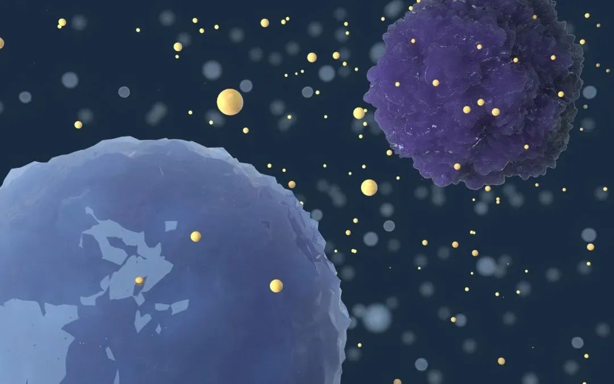
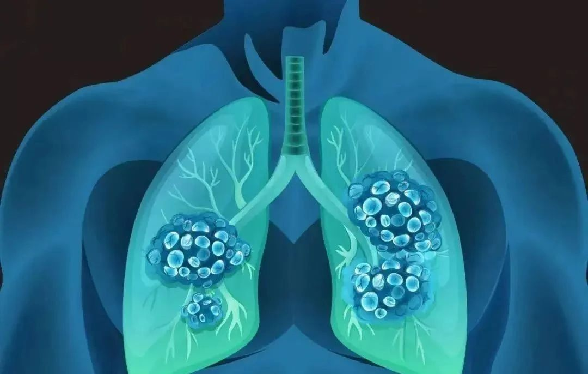
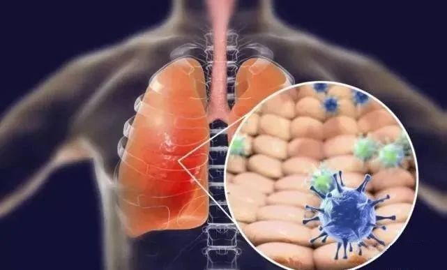
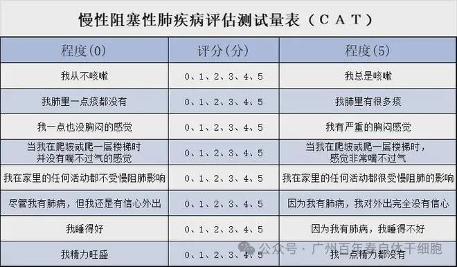

年后肝"负重"？百年春护肝美颜能量抗衰老针——给肝"松绑"，让脸发光！
2026-03-01

About Us
关于百年春

01
关注肺部健康

能够有效地缓解呼吸道症状，修复肺损伤，为慢性肺损伤人群提供一种全新的、快捷、有效的治疗方式。
02

01 自体干细胞：组织修复的“种子细胞”
自体干细胞（如自体间充质干细胞、自体肺脏干细胞）具有归巢性、多向分化能力和免疫调节功能。其核心优势在于：
低免疫排斥风险：自体来源避免了异体移植的排异反应；
精准修复损伤：通过归巢效应定向迁移至肺部病变区域，分化为肺泡上皮细胞或血管内皮细胞，直接参与组织重建；
抗纤维化作用：抑制成纤维细胞过度增殖，减少胶原沉积，逆转肺纤维化进程；
免疫调节作用：抑制免疫细胞的增殖及活化、诱导调节性T细胞的产生，减少慢性炎症反应、有助于减轻组织损伤，并为组织再生与修复创造更有利的环境；
促进血管形成：帮助改善受损肺组织的血液供应，增加向向受损肺组织输送氧气及营养物质的能力，最终达到促进肺组织修复的目的。

美国对100例COPD患者进行自体干细胞（自体造血干细胞+自体间充质干细胞）治疗评估，82%患者生活质量提升，48%患者肺功能测试指标改善超过10%。
02 外泌体：无细胞治疗的“纳米快递员”
高效靶向递送：雾化吸入后可直接抵达肺泡和细支气管，无需全身循环
多重调控机制：通过抗炎、抗菌、传递信息等途径，促使体内干细胞工作，达到修复受损组织
安全性高：无细胞核移植风险，避免免疫排斥。
案例支持：
研究显示，自体肺干细胞分泌组雾化吸入后，小鼠肺纤维化面积减50%，效果显著优于传统的脐带间充质干细胞；

海南医学院的临床研究中，自体脐带间充质干细胞外泌体雾化治疗肺纤维化患者，早期干预组病灶吸收时间缩短40%。
03
1 优势互补
快速缓解症状：外泌体雾化迅速抑制炎症风暴，为自体干细胞修复争取时间；
2 典型案例
随着外泌体工程化技术的成熟（如载药修饰、靶向肽标记），以及自体干细胞的普及，肺脏疾病的治疗将迈入“精准再生”时代。
百年春通过“自体干细胞+外泌体”双引擎模式，不仅为患者提供了更安全的治疗选择，更推动了无创化、家庭化治疗的可能——未来，患者或可通过家用雾化设备每日吸入外泌体，定期回输干细胞，实现疾病的长期管理。而无论是急性肺炎还是慢性纤维化，这种“双引擎”策略都将为患者带来更高效、更安全的康复希望。